Configuración inicial: importación del repositorio oficial de Docker
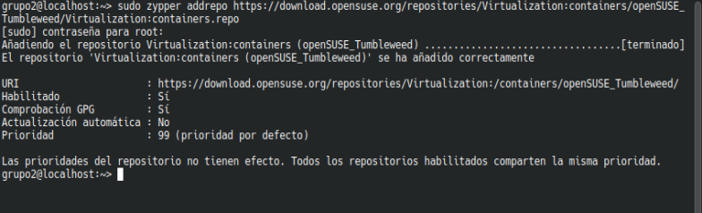Se actualiza repositorio
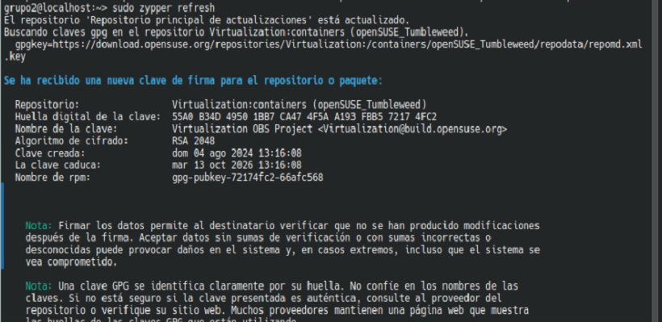Instalación de paquetes: docker-ce, docker-ce-cli, containerd.io, docker-compose
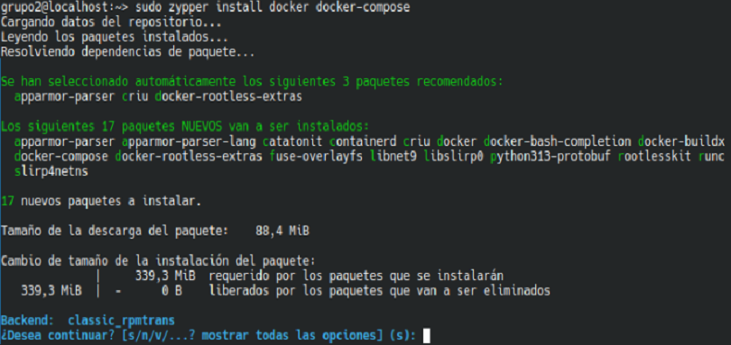Añadiendo el usuario actual al grupo docker
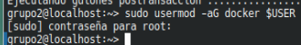Despues de reiniciar sesión, Habilitar el servicio con systemctl enable docker
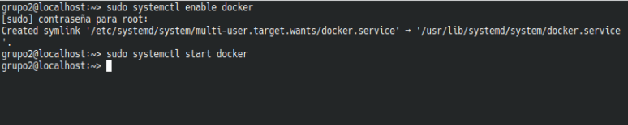Se verifica instalacion con docker Hello World
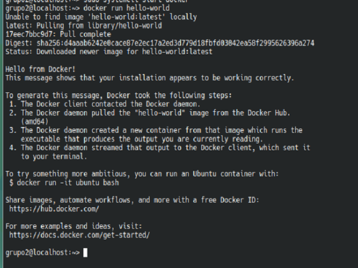Docker -Version
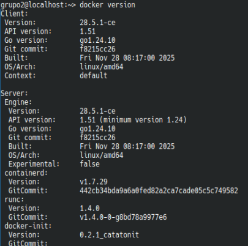Docker -Info
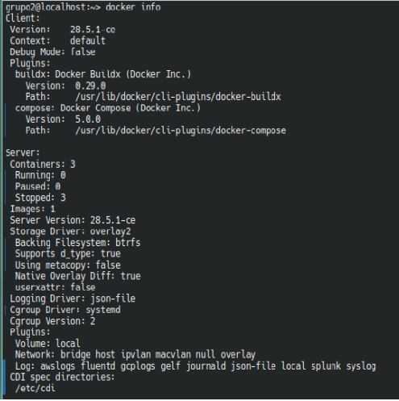Se crea el archivo Dockerfile para el entorno de desarrollo base Fedora usando nano
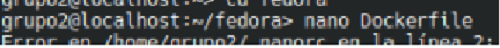Se configura definiciones básicas en el Dockerfile:
Selección de imagen base Fedora, etiqueta de mantenedor;
Así como actualización de repositorio principal e instalación de herramientas
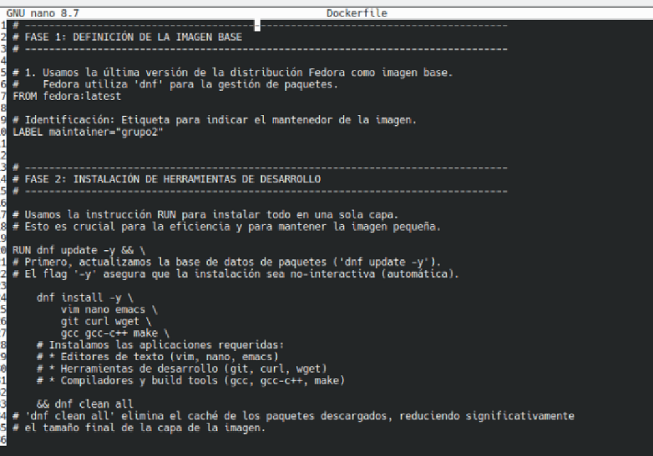Se definen variables de usuario no root y grupo de trabajo,
se asigna /home al usuario y se le establece como directorio de trabajo predeterminado
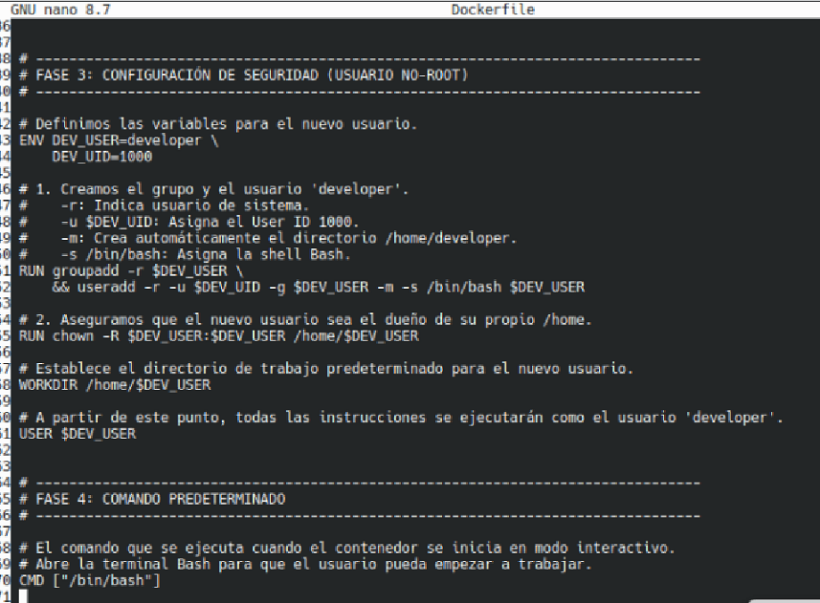DOCKER BUILD
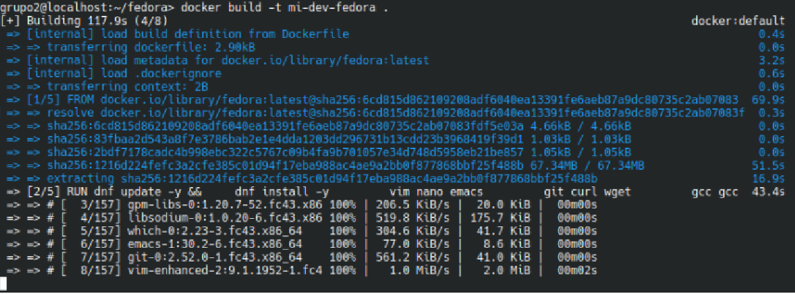Docker images
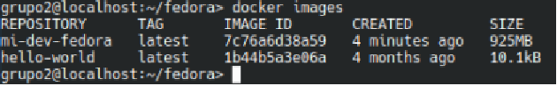Docker run
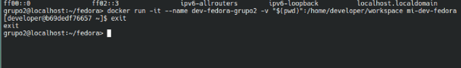Docker ps
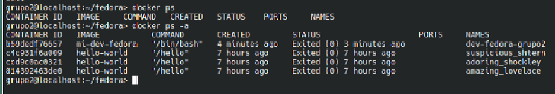Docker exec, para este comando es necesario iniciar el contenedor en segundo plano primero (docker start)
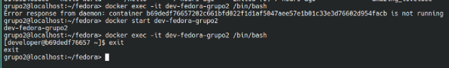Docker logs/p> 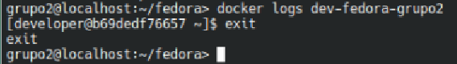
Docker inspect
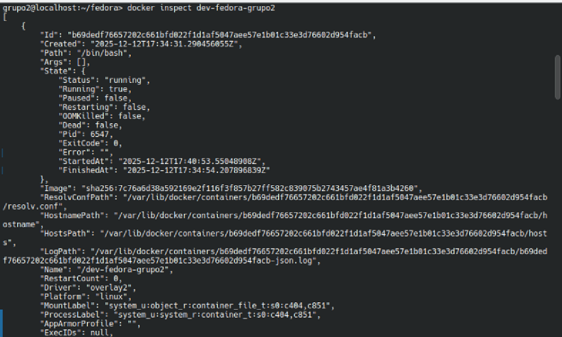Docker stop y rm
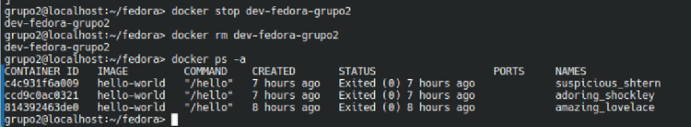